mpg |>
count(class)20 Probability Distributions
When we talk about outcomes in the real world – how a coin lands, which class a randomly picked car belongs to, or how long you might wait for the next customer to walk in – we are really talking about probability distributions. A probability distribution tells us what outcomes are possible and how likely each one is.
In this chapter, we build up the idea of probability distributions carefully, starting with simple examples you already know intuitively, and then working towards the more powerful continuous distributions that underpin much of statistics.
20.1 Simple Probability: Coins and Dice
You have probably heard the phrase “fifty-fifty chance.” That is an informal way of describing the probability distribution of a fair coin toss.
A fair coin has only two possible outcomes – heads and tails – and each is equally likely:
\[ P(\text{head}) = 0.5, \quad P(\text{tail}) = 0.5 \]
Notice that the two probabilities sum to 1. That is always the case: all possible outcomes together must account for 100% of what can happen.
Figure 20.1 shows the same thing pictorially.
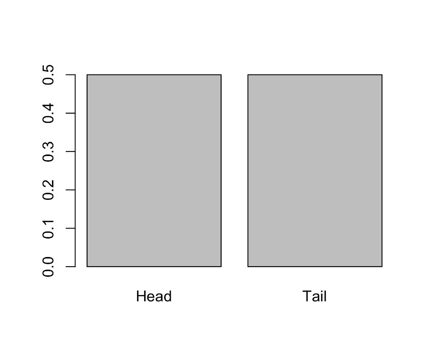
Figure 20.2 shows the number of times each face showed up in 1000 rools of a die. The number of times each face shows up is not equal in practice. But as the number of rolls of the die increases, these numbers will tend to come closer and closer to equality.
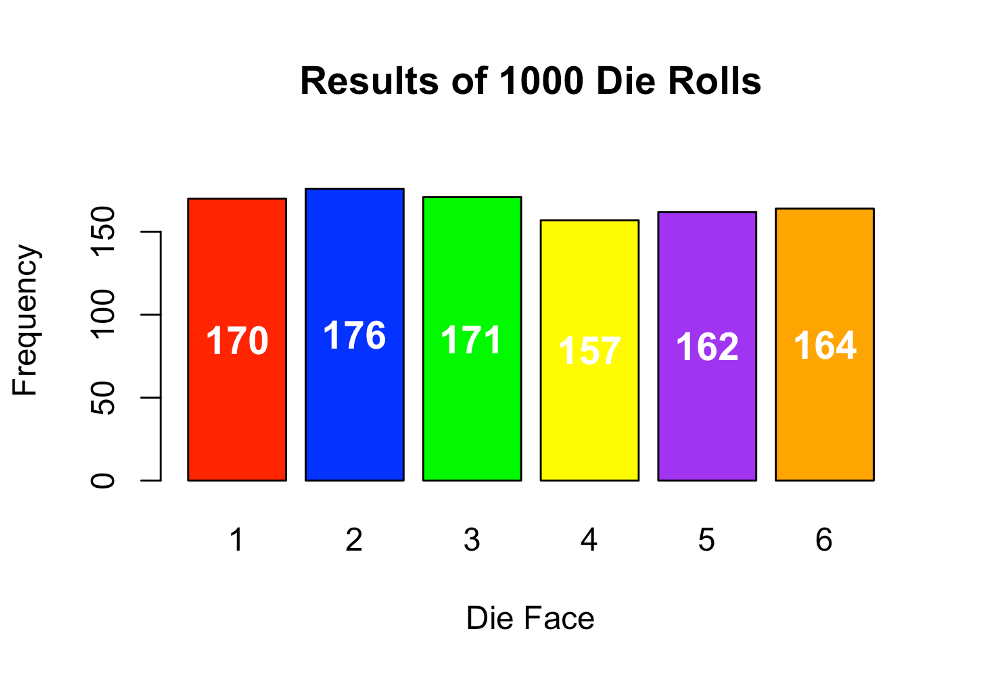
These two examples – the coin and the die – are instances of discrete probability distributions, where only a countable set of outcomes is possible.
20.2 Discrete vs. Continuous Distributions
The distributions we have seen so far in this chapter are discrete because the outcomes are separate, distinct values. But many real-world quantities can take on any value along a continuous range. This leads to the second major type: continuous distributions.
| Discrete | Continuous | |
|---|---|---|
| Takes on | Distinct, separated values | Any value in a range |
| Examples | Coin toss, die roll, car class | Height, weight, profit, time until next customer arrives |
The distinction matters because it changes how we think about and compute probabilities, as we will see shortly.
20.3 Visualizing Discrete Distributions
The natural way to visualize a discrete distribution is with a bar chart. Each bar sits above one of the possible outcomes, and its height gives the probability of that outcome.
Consider the coin toss. We have two bars of equal height, each at 0.5. The bars do not touch each other because there is a conceptual gap between “heads” and “tails” – they are distinct categories.
Now consider a richer example. In the mpg dataset, if we pick a car at random, we might ask: what is the probability it belongs to each vehicle class? Some classes are more common than others.
Let us first count the number of vehicles of each class in the dataset:
The dataset has 234 rows and roughly 2% of the vehicles are two-seaters and 20% of the cars are compacts. Therefore: - The probability of picking a compact is 0.20 - The probability of picking a 2-seater is only 0.02
Figure 20.3 shows these probabilities as a bar chart.
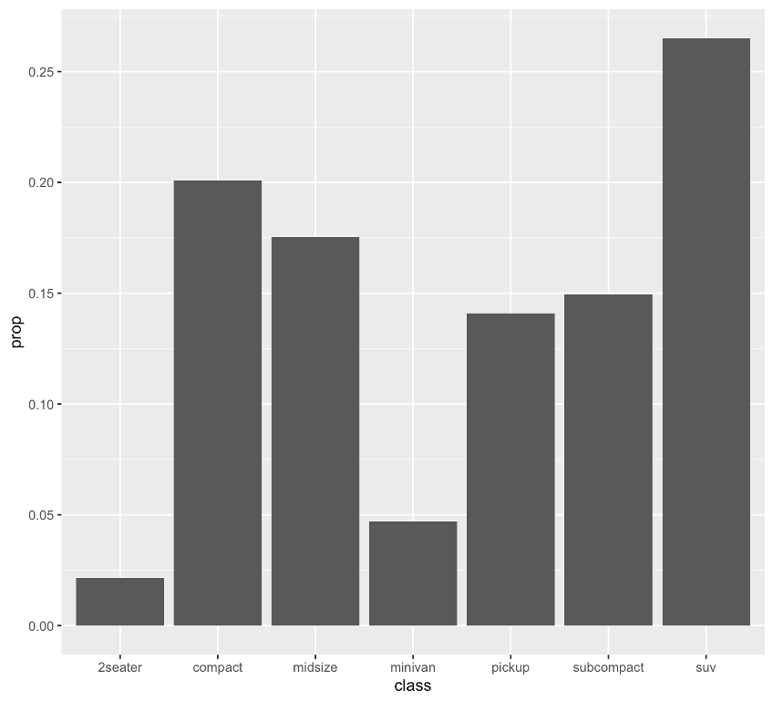
mpg data frame
The bar chart makes these differences in probabilities immediately visible. A compact is ten times more likely to appear in a random draw than a 2-seater.
To summarize, in the case of discrete outcomes, the probability of an outcome is just its proportion in the dataset.
20.4 Visualizing Continuous Distributions
For continuous variables, we use a histogram to visualize the distribution. Histograms look similar to bar charts – they also use bars – but there is an important difference: the bars touch each other, reflecting the fact that the underlying variable is continuous with no gaps.
Histograms can display either frequencies (counts) or probabilities on the y-axis. When we put probabilities on the y-axis, we begin to see the histogram as an approximation to a smooth curve, which is exactly how continuous distributions are represented mathematically.
Consider the inter-arrival times (time laspse between the arrival of two consecutive customers) at a bank. Suppose customers arrive at an average rate of 12 per hour – that is, one customer every 5 minutes on average. If we recorded a large number of inter-arrival times and plotted them in a histogram, we would see a characteristic shape: many short gaps and progressively fewer long gaps. This shape follows an exponential distribution.
Figure 20.4 shows the histogram.
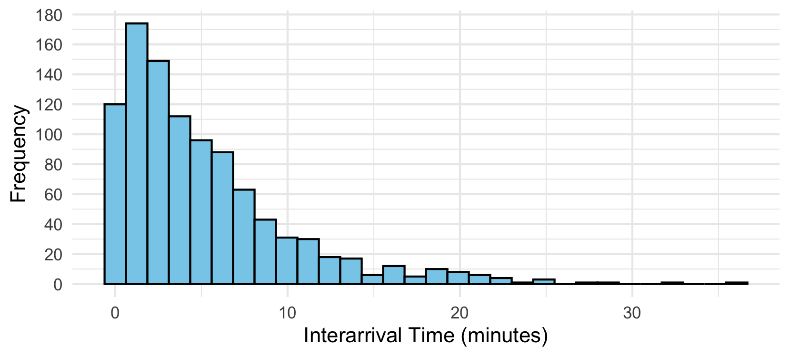
In Figure 20.4, each bar spans a time interval on the x-axis. In this case, each bar spans one minute. You can see from the leftmost bar that 120 of the 1000 inter-arrival times were less than one minute. As expected, we see that very long inter-arrival times are rare.
Based on our earlier discussion under variation, we can see that this distribution is skewed towards higher values.
Figure 20.5 visualizes the same data as a violin plot.
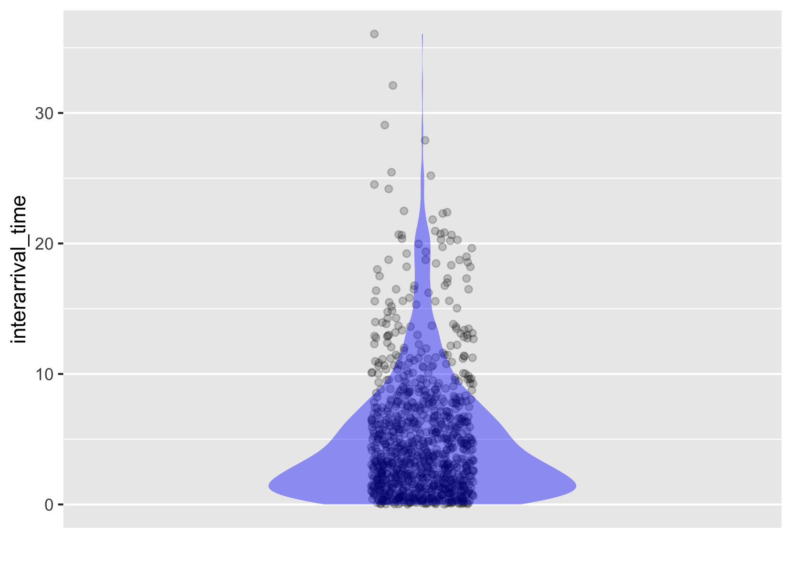
When we add up many small random values – like the combined effect of many small factors that together determine a person’s height. The distribution of the resulting sum tends to look like a symmetric, bell-shaped curve. This is the normal distribution, and it appears so often in nature and in statistics that it deserves special attention.
20.5 Visualizing continuous distributions
Until now we have used the violin plot extensively to visualize continuous distributions. We have used the histogram as well, but it bins the values and does not tell us the complete story. To see the full story, we need to visualize the distribution as a smooth curve, which is how it is represented mathematically. This is called a probability density function (PDF), and it is the continuous analogue of a bar chart for discrete distributions.
We can see what a probability density function looks like if we split the violin vertically down the middle and rotate it right by 90 degrees.
Figure 20.6 shows the result.
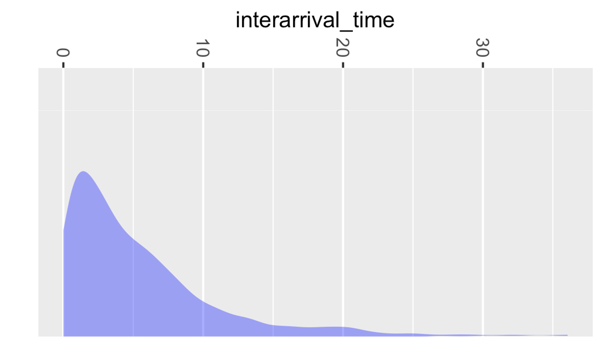
Figure 20.7 shows the PDF of the heights of adult women in the US. This represents a normal (or Gaussian) distribution. As the figure says, the mean height is 162 cm and the standard deviation is 6.9 cm.
The curve is bell shaped and symmetrical around the mean.
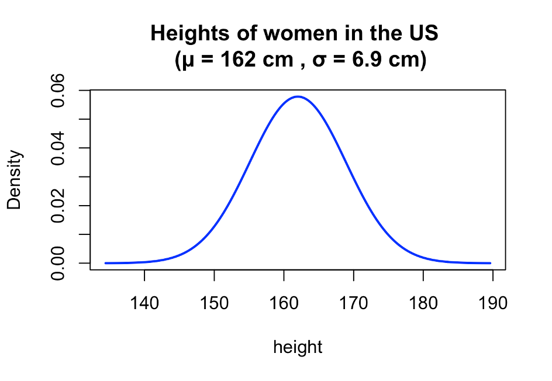
20.6 Interpreting the Two Types of Distribution
Here is a key difference in how we interpret probabilities for the two types of distribution:
For a discrete distribution, the y-axis of a bar chart gives the actual probability of each outcome. If the bar for “compact” reaches 0.20, that means there is a 20% chance of picking a compact.
For a continuous distribution, the y-axis of a smooth curve does not give actual probabilities. Why not? Because with a continuous variable, there are infinitely many possible values. The probability of landing on any single exact value – say, exactly 5.0000… minutes of inter-arrival time, or an exact height of 165 cm – is zero.
20.7 The Probability Density Function (PDF)
The smooth curve that describes a continuous distribution is called a probability density function, or PDF. The name contains an important clue: the y-axis gives density, not probability.
Think of density the way you think of population density in geography. A city might have a high population density – many people per square kilometer – without you being able to say exactly how many people live at one specific GPS coordinate. Similarly, a high density value at a given x-value tells you that outcomes near that x-value are relatively common, without giving you the probability of any single exact outcome.
Consider the distribution of heights of adult women in the United States. Suppose the PDF has a value of 0.058 at a height of 162 cm.
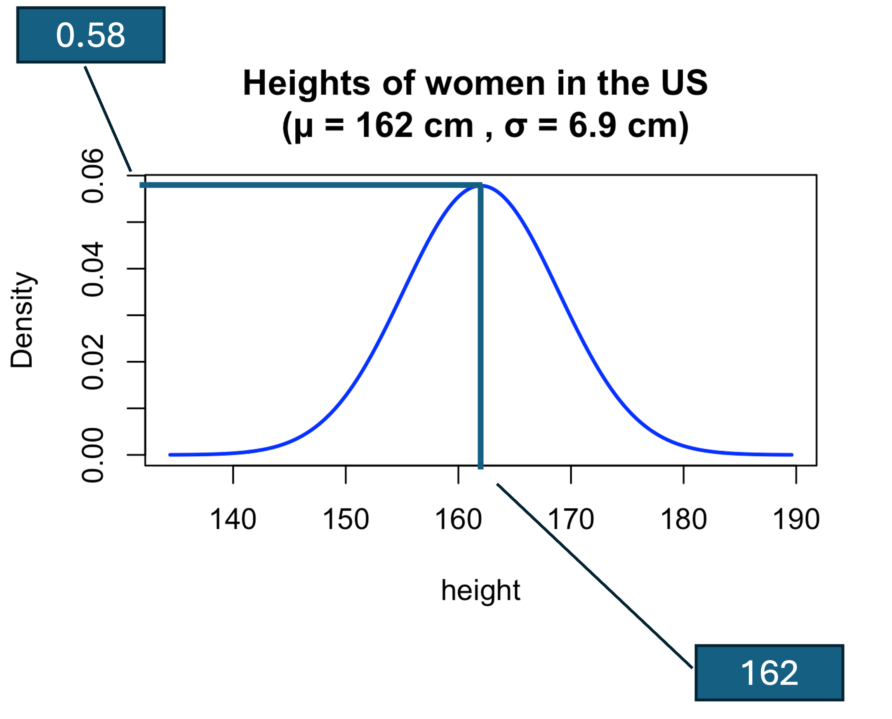
This does not mean there is a 58% chance that a randomly chosen woman is exactly 162 cm tall. That probability is zero. What it does mean is that heights near 162 cm are relatively likely – specifically, they are more likely than heights where the curve is lower.
20.8 Relative Probability: What the Density Curve Actually Tells Us
The density value at a given x-value is meaningful only in comparison to the density value at other x-values. It gives you the relative likelihood of outcomes.
Greek symbols used for mean and standard deviation
In statistics we often use Greek letters to refer to parameters of a distribution. The mean is usually denoted by \(\mu\) (the Greek letter “mu”) and the standard deviation is usually denoted by \(\sigma\) (the Greek letter “sigma”).
Figure 20.9 shows a generic normal distribution with mean -0.6 and standard deviation 0.2.
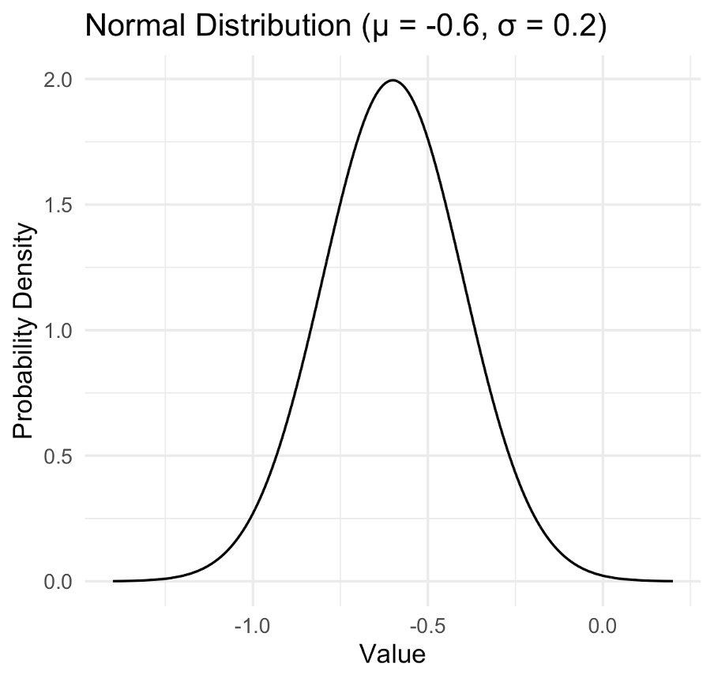
The distribution is Figure 20.9 has a height of 2 at x = -0.6. So clearly the height at any point cannot be a probability!
Figure 20.10 shows the height distribution we saw earlier with two points labeled.
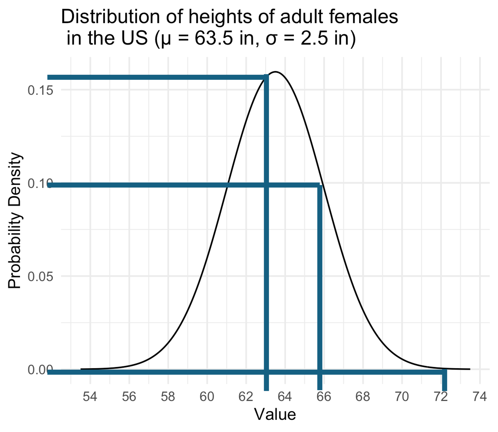
Figure 20.10 shows that the density for a height of 63 inches is 0.15 and the density for a height of 66 inches is 0.10. These are relative densities and not probabilities. They tell us that heights close to 63 inches are 1.5 times more likely than heights close to 66 inches.
This is the correct way to read a probability density function: not as absolute probabilities, but as a map of relative likelihood across the range of possible values.
The y-axis can even exceed 1 in a PDF and still be perfectly valid. This confuses many people at first.
The intuition behind “density”
Think of the function value at any given x-value as the relative density of outcomes around that x-value. A high density means outcomes in that neighborhood are clustered together and likely. A low density means outcomes in that neighborhood are sparse and unlikely.
20.9 The Normal (Gaussian) Distribution
The normal distribution is the most important probability distribution in all of statistics. It is the bell-shaped curve that arises naturally when many independent random influences are added together – which, it turns out, describes an enormous variety of real-world phenomena.
A key property of any probability density function – including the normal distribution – is that the total area under the curve is always exactly 1. This is the continuous analogue of the fact that all bar heights must sum to 1 in a discrete distribution.
The normal distribution is fully described by just two numbers:
- its mean \(\mu\), which controls where the centre of the bell is located
- its standard deviation \(\sigma\), which controls how wide or narrow the bell is
Figure 20.11 shows how changing the standard deviation changes the shape of the normal distribution.
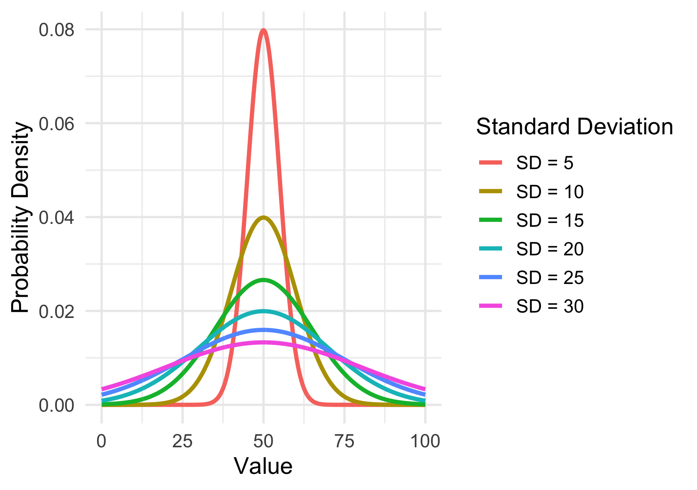
A larger standard deviation produces a flatter, more spread-out curve. A smaller standard deviation produces a taller, more tightly concentrated curve. Shifting the mean simply slides the whole curve left or right along the x-axis, without changing its shape.
Figure 20.12 shows the same information with each plot on its own facet.
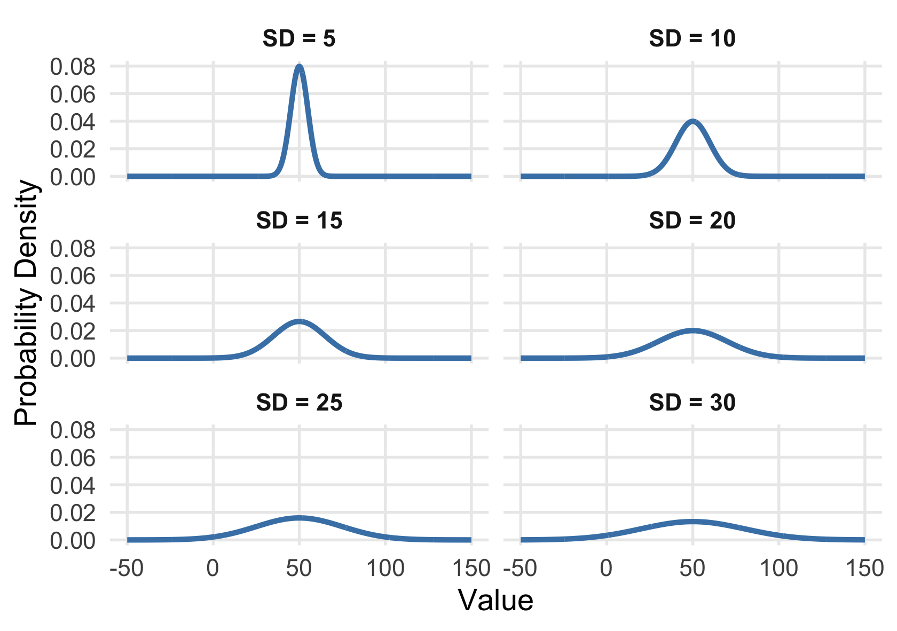
20.10 How do we calculate probabilities from a PDF?
We already know that the function value from the pdf is not a probability; it is only a relative density. So how do we calculate actual probabilities from a PDF?
For continuous distributions, the probability of a value being exactly equal to anything is always 0. We can only calculate the probability that a value falls in a certain range.
We do that by finding the area under the curve of the PDF over that range.
Figure 20.13 shows the pdf of the daily sales by a customer for a store. The area under the curve between 30 and 40 is shaded. The probability that a randomly chosen customer has daily sales between 30 and 40 is equal to the area of the shaded region, which is 0.121.
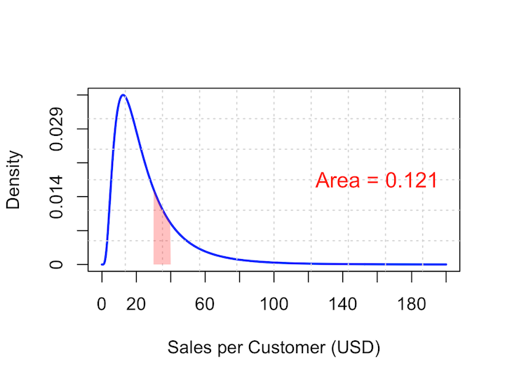
Figure 20.14 shows the same PDF with the area to the right of 20 shaded. The probability that a randomly chosen customer has daily sales greater than 20 is equal to the area of the shaded region, which is 0.502.
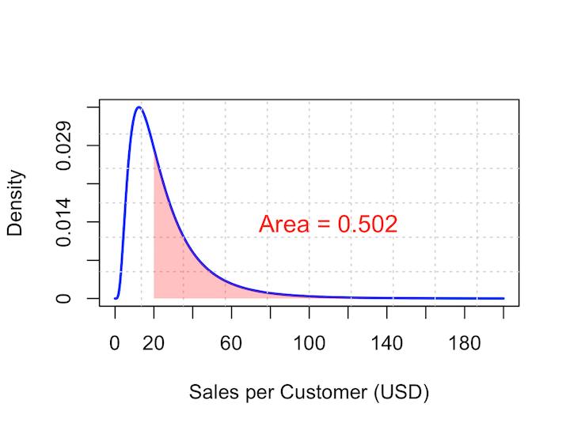
We can also infer from Figure 20.14 that the probability of a randomly chosen customer having daily sales less than 20 is 0.498, since the total area under the curve must equal 1.
To continue our exploration of the effect of the standard deviation on the shape of the normal distribution, let’s consider how the probability of the same outcome changes when the standard deviation changes.
Figure 20.15 shows normal distributions withe the same mean but different standard deviations. In each one, we have shaded the area under the curve for a value between 45 and 55. We can see clearly that the probability reduces as the standard deviation rises.
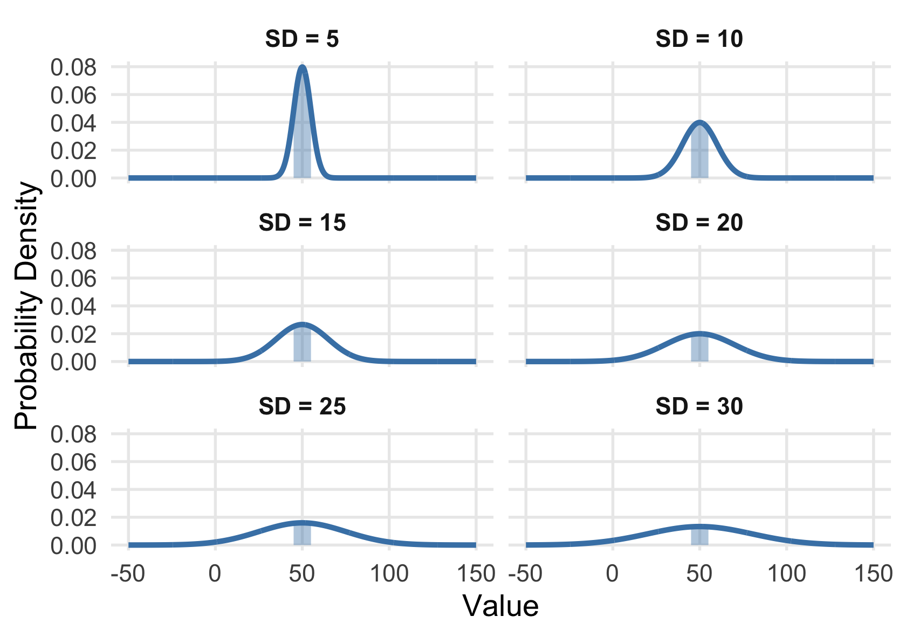
Table 20.1 shows the information in Figure 20.15 numerically.
| Standard Deviation | P(45 ≤ X ≤ 55) |
|---|---|
| 5 | 0.6827 |
| 10 | 0.3829 |
| 15 | 0.2611 |
| 20 | 0.1974 |
| 25 | 0.1585 |
| 30 | 0.1324 |
20.11 Other Important Distributions
Beyond the normal distribution, statistics relies on several other distributions that arise in specific contexts.
20.11.1 The Chi-Square Distribution
The chi-square distribution is a family of distributions, each characterized by a single parameter called the degrees of freedom. As the degrees of freedom increase, the distribution shifts to the right and becomes more symmetric. It is used extensively in statistical tests – for instance, when testing whether observed counts differ from expected counts, or when comparing proportions across groups.
Figure 20.16 shows how the shape of the chi-square distribution changes as the degrees of freedom increases.
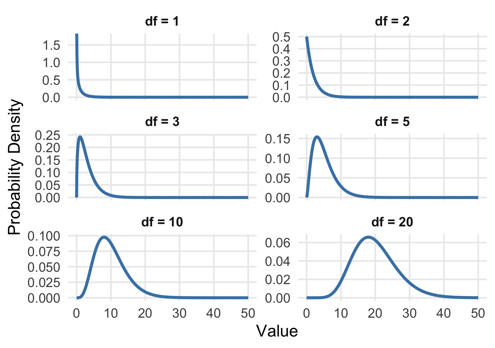
20.11.2 The T Distribution
The T distribution (sometimes called Student’s t-distribution) also forms a family parameterised by degrees of freedom. It looks similar to the normal distribution – bell-shaped and symmetric – but with heavier tails, meaning extreme values are more likely than under a normal distribution. As the degrees of freedom increase, the T distribution approaches the normal distribution. It is used extensively in statistics whenever we are working with small samples or when the population standard deviation is unknown.
Figure 20.17 shows how the shape of the T distribution changes as the degrees of freedom increases.
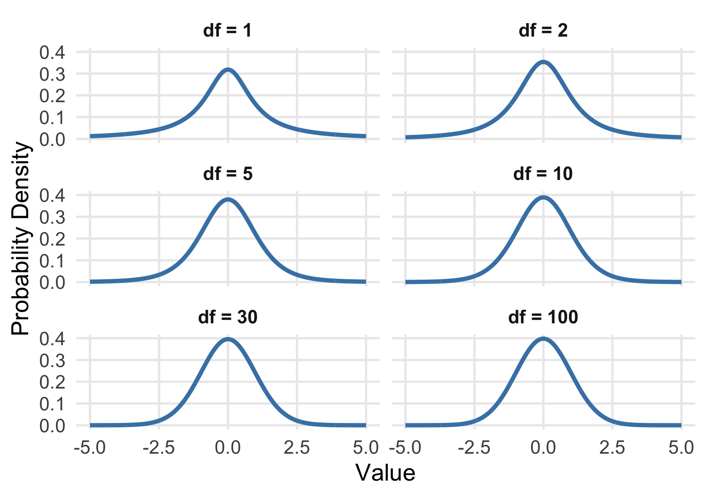
Summary: Key ideas from this chapter
- A probability distribution describes the possible outcomes of a random process and how likely each is.
- Discrete distributions apply to variables with a countable set of outcomes; probabilities are read directly from the bar heights in a bar chart.
- Continuous distributions apply to variables that can take any value in a range; the y-axis of the curve gives density, not probability.
- The probability density function (PDF) describes a continuous distribution; the area under the entire curve always equals 1.
- Density values are meaningful only in relative terms – they tell you how likely one outcome is compared to another.
- The normal distribution is the most important continuous distribution, defined by its mean and standard deviation.
- The chi-square and T distributions are other important distributions that appear throughout statistics.